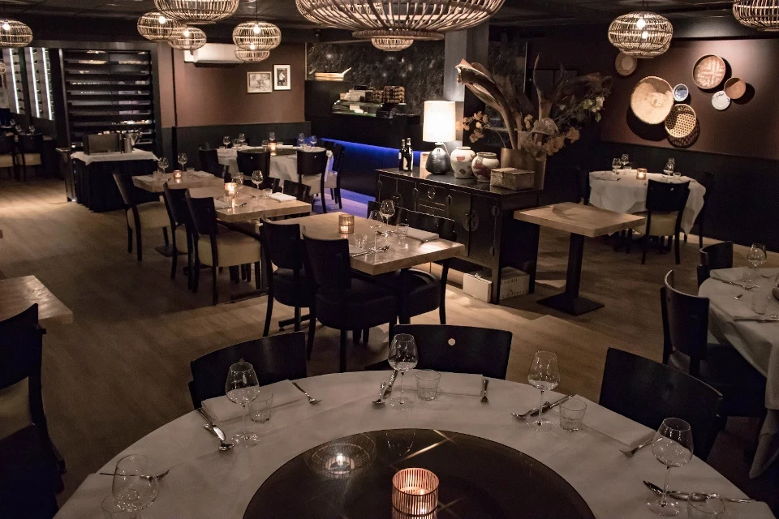
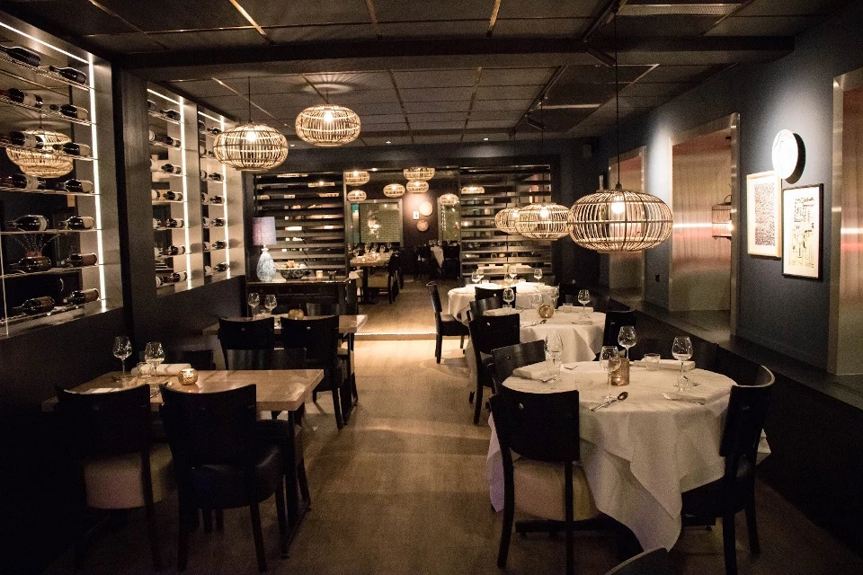
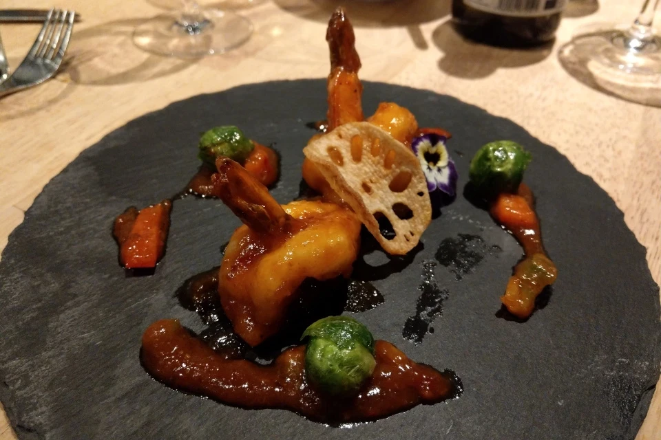
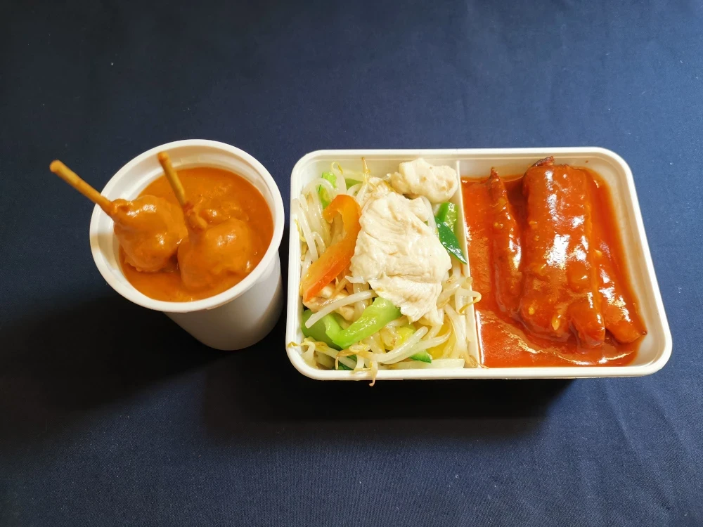
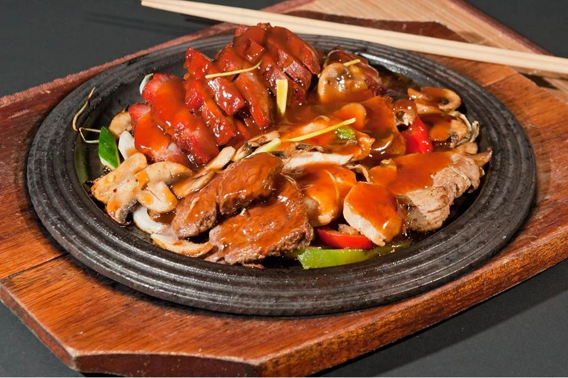
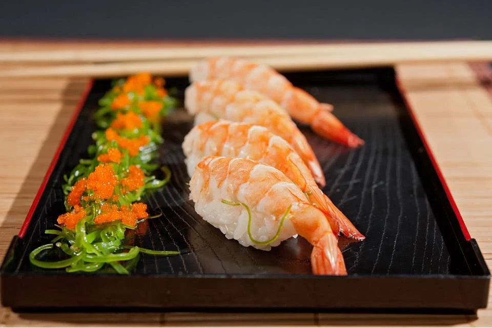
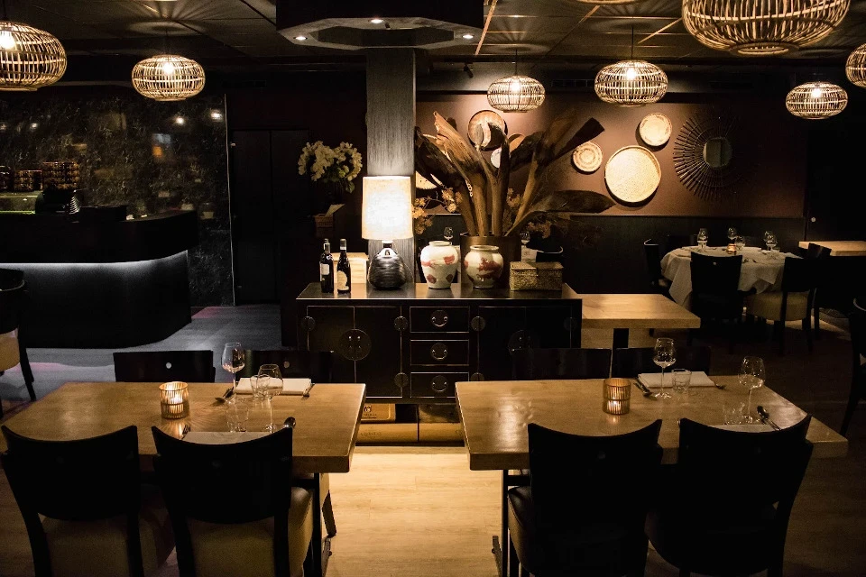
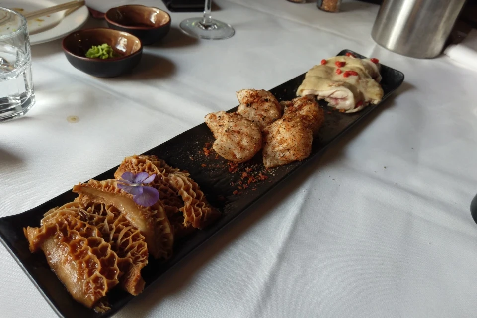
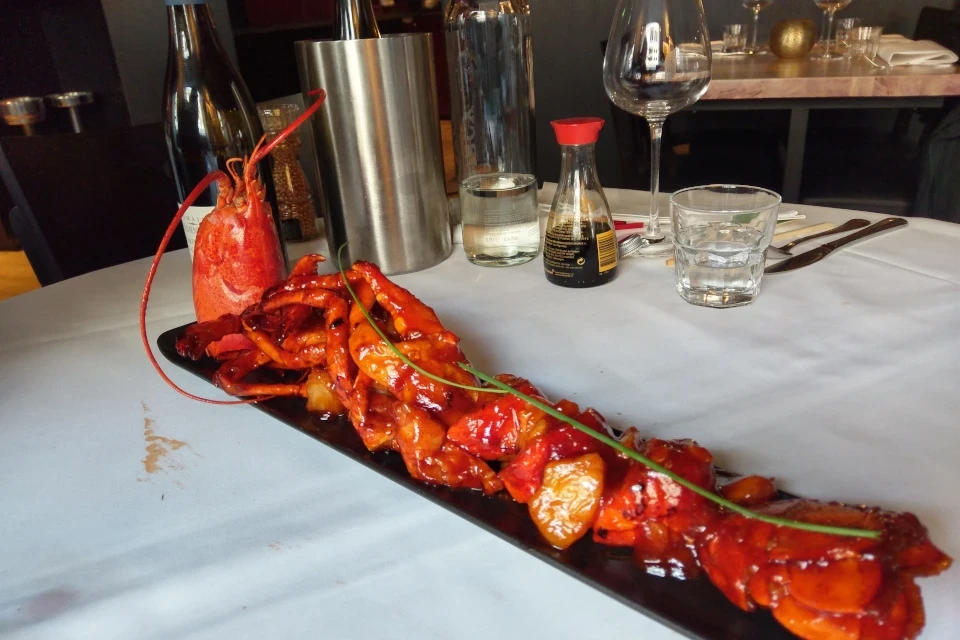
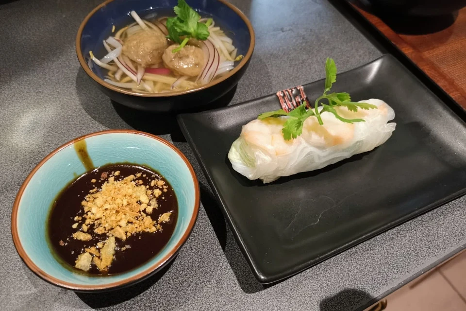

Aziatisch tafelen in Lisse
Geniet bij Restaurant Dragon Town van de Aziatische Tapas, à la carte of rijsttafel. Liever thuis eten? Bestel online voor afhalen of bezorging aan huis.
Donderdag t/m zondag open van 16:30 tot 22:00
Over Dragon Town
Al meer dan 40 jaar een begrip in de Bollenstreek.
Niet alleen vanwege de Chinese keuken, ook vanwege de diverse andere Aziatische gerechten. Deze kunt u bestellen via de à la carte, maar ook bij de Aziatische Tapas.
Bij Dragon Town’s à la carte menu ontdek je een betoverende reis door smaken. Van wokgerechten tot verfijnde sushi, elk gerecht is een kunstwerk van versheid en authenticiteit.


Bestellen, afhalen en bezorgen
Bestellen doet u bij onze bestelpagina, daar ziet u ook de actuele bezorgtijden. Bezorging in Lisse, Lisserbroek, Hillegom, Sassenheim, Beinsdorp, De Zilk en Voorhout.
Bezorgtijden
Zie de bestelpagina voor de actuele bezorgtijden.
Nergens gratis bezorging.
Afhaaltijden
| Maandag | 16:30 - 20:00 |
| Dinsdag | Gesloten |
| Woensdag | 16:30 - 20:00 |
| Donderdag | 16:30 - 21:00 |
| Vrijdag | 16:30 - 21:00 |
| Zaterdag | 16:30 - 21:00 |
| Zondag | 16:30 - 21:00 |
Bezorgkosten
| Plaats | Kosten | Minimum |
|---|---|---|
| Lisse 2161, 2162, 2163 | € 2,50 | € 20,00 |
| Lisserbroek 2165 | € 2,50 | € 20,00 |
| Hillegom 2181, 2182 | € 3,50 | € 25,00 |
| Sassenheim 2171, 2172 | € 3,50 | € 30,00 |
| Beinsdorp 2144 | € 3,50 | € 30,00 |
| De Zilk 2191 | € 3,50 | € 25,00 |
| Voorhout 2215, 2216 | € 4,00 | € 35,00 |
Combinatiegerechten om af te halen
Een greep uit de bestelpagina; de volledige kaart, drinken en wijn vindt u daar.

Catering
Heeft u gasten, werkt u over of heeft u geen tijd om eten klaar te maken? Wat dacht u van een lopend buffet bij u thuis of op het werk? Dat kan al voor € 21,50 per persoon.
Wij zorgen voor heerlijke gerechten, geheel verzorgd met au-bain-maries en opscheplepels, zodat de gerechten warm en lekker blijven. Deze service bieden wij u op elke gewenste locatie binnen Lisse en Hillegom. Wij zorgen dat het klaar staat op de afgesproken tijd en plaats.
Indien u het wenst leveren wij serviesgoed tegen een kleine vergoeding. Na afloop nemen wij alles mee en heeft u geen omkijken naar de afwas. Natuurlijk is het ook mogelijk om in overleg een buffet samen te stellen dat aansluit op uw persoonlijke wensen.
Extra’s om mee te bestellen
| Gebakken Wantan | € 1,50 p. stuk |
| Pisang Goreng | € 1,50 p. stuk |
| Mini Loempia | € 2,75 p. stuk |
| Saté Ajam | € 2,50 p. stuk |
| Mihoen Goreng (min. 10 pers.) | € 2,00 p. pers. |
| Chinese Bami Goreng (min. 10 pers.) | € 2,00 p. pers. |
| Borden en bestek (inclusief afwassen) | € 1,75 p. pers. |
Bezorgkosten elders € 15,00.
Menu A
- Babi Pangang Speciaal
- Daging Rendangrundvlees in pikante saus
- Con Bo Kaikipfilet met cashewnoten in licht pittige saus
- Foe Yong Hai
- Roergebakken Groenten
- Saté Ajam
Menu B
- Gebakken Wantan
- Gebakken Sieuw Mai
- Mini Loempia
- Ngau Dingossenhaas in ketjapsaus met cashewnoten
- Babi Pangang Speciaal
- Tjew Yim Kaikipfilet gekruid met knoflook en verse pepers
- Peking eend met ananas
- Con Bo Hagarnalen met cashewnoten in licht pittige saus
- Roergebakken Groenten
Menu C
- Gebakken Wantan
- Gebakken Sieuw Mei
- Mini Loempia
- Ngau Dingossenhaas in ketjapsaus met cashewnoten
- Babi Pangang Speciaal
- Tjew Yim Kaikipfilet gekruid met knoflook en verse pepers
- Garnalen in sambalsaus
- Daging Rendangrundvlees in pikante saus
- Gado Gadogroenten in pindasaus
- Pisang Gorenggebakken bananen
- Saté Ajam
Kerst 2026: Aziatische Tapas met Sushi
Aziatisch genieten tijdens de Kerstdagen? Dat kan bij Restaurant Dragon Town. Tijdens de Kerstdagen van 2026 kunt u uitgebreid genieten van onze Aziatische Tapas en Sushi.
De opzet is hetzelfde gebleven: u geniet van de eerste drie gangen van diverse Aziatische gerechten, zorgvuldig samengesteld door onze keuken en sushibar. Na deze drie gangen kunt u zelf verder bestellen of de keuze aan ons laten. Een Kerstdessert mag natuurlijk niet ontbreken: dit jaar serveren wij een uniek huisgemaakt Kerstdessert, geschikt voor jong én oud.
Liever traditioneel? Dat kan met een Chinese rijsttafel of à la carte. Dragon Town is geopend op Eerste en Tweede Kerstdag. Reserveer snel uw tafel online.






Tijden en contact
Dragon Town
Berkhoutlaan 5
2161 EL Lisse
Openingstijden restaurant
| Maandag | Gesloten |
| Dinsdag | Gesloten |
| Woensdag | Gesloten |
| Donderdag | 16:30 - 22:00 |
| Vrijdag | 16:30 - 22:00 |
| Zaterdag | 16:30 - 22:00 |
| Zondag | 16:30 - 22:00 |
Geopend op Eerste en Tweede Kerstdag (2026).
Stuur een bericht
Up to date blijven?
Meld u aan voor onze nieuwsbrief.